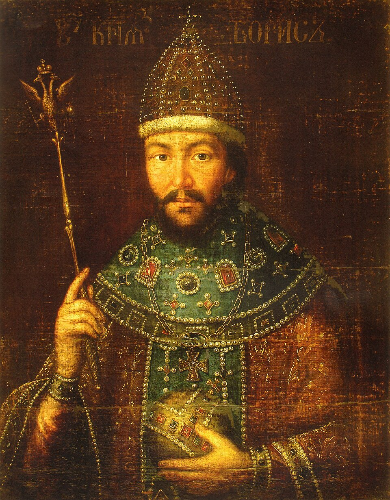

Земский собор 1598 года
Земский собор 1598 года стал поворотным моментом русской истории — впервые в истории страны монарха выбрали, а не унаследовали престол по праву крови. Это событие открыло период Смутного времени. 6 января 1598 года умер царь Фёдор Иванович, последний представитель династии Рюриковичей на московском престоле. Он не оставил завещания и наследников. Поскольку прямого наследника не было, для легитимации новой власти потребовалось всенародное одобрение — так был созван Земский собор. Это был один из самых масштабных соборов своего времени. Хотя историки расходятся в подсчетах, всего в его работе участвовало около 500–600 человек. Главная интрига заключалась в процедуре "умоления" Бориса Годунова принять корону. По официальной версии (отражавшей интересы Годунова), он отказывался от престола, и народ со слезами умолял его согласиться. Однако альтернативы были. В исторической литературе упоминаются как минимум четыре кандидатуры: Фёдор Никитич Романов (будущий патриарх Филарет) — главный соперник, имевший больше прав на родство с прежней династией. Александр Никитич Романов. Фёдор Иванович Мстиславский (глава Боярской думы, праправнук Ивана III). Патриарх Иов активно продвигал кандидатуру Годунова, аргументируя это тем, что тот фактически управлял страной при недееспособном Фёдоре. Ключевое событие произошло 20–22 февраля 1598 года: крестный ход во главе с патриархом и иконами направился в Новодевичий монастырь, где находился Годунов с сестрой (царицей Ириной). После долгих уговоров (и даже угроз отлучить его от церкви за упрямство), Борис дал согласие.
_by_shakko.jpg)
